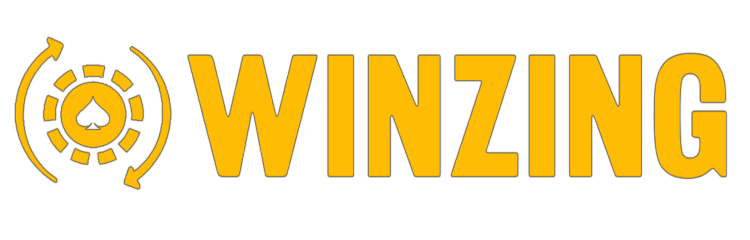
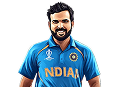

YOLO
1
YOLO

Start playing
Instant ID
💰
Report a Deposit
Earn now
Already deposited on Yolo247? Log it and get paid
1%
Cashback
🤝
Referral commission 1%
Invite friends to Yolo247.io · get paid
›
Free Predict &
Win
(1)
VIEW ALL ›
Tri series in UAE 2026 · Today 5:00 PM
Open
AFG
AFGHANISTA
1.60
x
IND
2.40
x
Closes in
00:24:44
Prediction is
Open
Predict Now
Live
Matches
(6)
VIEW ALL ›
2nd Test · St George's Park, Gqeberha
LIVE
RSA
425-9 d
127.1
AUS
83-7
37.4
Australia Have Won The Toss And Have Opted To Bowl
In-Play
46th Match · Diamond Oval, Kimberley
LIVE
NCAPE
0-2
0.5
SWD
Yet to bat
Win
Probability
SWD
14
15
Northern Cape Have Won The Toss And Have Opted To Bat
In-Play
3rd Youth ODI · Al Amerat Cricket Ground (Ministry Turf 1), Al Amerat
LIVE
AFG-U19
237-10
50.0
BAN-U19
157-5
27.4
Win
Probability
BAN-U19
36
37
Afghanistan U19 Have Won The Toss And Have Opted To Bat
In-Play
32nd Match, Elite Group B · KSCA Hubli Cricket Ground, Hubli
LIVE
KAR
342-10 & 243-7 d
111.3 & 64.1
SAU
349-10 & 130-2
108.3 & 39.1
Saurashtra Have Won The Toss And Have Opted To Bowl
In-Play
4th Match · Bellerive Oval, Hobart
LIVE
TAS
241-10 & 236-10
89.2 & 85.3
VIC
207-10 & 98-5
61.1 & 36.0
Tasmania Have Won The Toss And Have Opted To Bat
In-Play
6th Match · W.A.C.A. Ground, Perth
LIVE
WA
339-10 & 30-3
105.1 & 15.0
NSW
440-6 d & 262-5
110.0 & 51.3
New South Wales Have Won The Toss And Have Opted To Bat
In-Play
Upcoming
Matches
(6)
VIEW ALL ›
3rd Match · ODI Tri-Nation Series in UAE, 2026
UPCOMING
AFG
Yet to bat
BAN
Yet to bat
21-Oct
05:00 PM
Win
Probability
AFG
57
58
Sheikh Zayed Stadium, Abu Dhabi
Starts in
00:24:44
45th Match · CSA T20 Challenge, 2026
UPCOMING
NWD
Yet to bat
LIMPO
Yet to bat
21-Oct
09:30 PM
Win
Probability
NWD
25
26
Senwes Park, Potchefstroom
Starts in
04:54:44
1st T20I · India tour of New Zealand, 2026
UPCOMING
NZ
Yet to bat
IND
Yet to bat
22-Oct
12:30 PM
Win
Probability
IND
61
62
Hagley Oval, Christchurch
Starts in
19:54:44
3rd Match · Pakistan ODI Tri-Series, 2026
UPCOMING
SL
Yet to bat
ENG
Yet to bat
22-Oct
01:30 PM
Rawalpindi Cricket Stadium, Rawalpindi
Starts in
20:54:44
1st ODI · Ireland tour of Namibia, 2026
UPCOMING
NAM
Yet to bat
IRE
Yet to bat
22-Oct
01:30 PM
High Performance Oval, Windhoek
Starts in
20:54:44
3rd T20I · New Zealand Women tour of Australia, 2026
UPCOMING
AUS-W
Yet to bat
NZ-W
Yet to bat
22-Oct
01:45 PM
North Sydney Oval, Sydney
Starts in
21:09:44
Redeem
Rewards
VIEW ALL ›
Select e-voucher
amazon
amazon
amazon
₹10,000
Amazon Voucher INR 10000
Min streak
10
1,250
COINS
My
Performance
0
Coins
🔥
0
Streak
0%
Accuracy
Chat
Reward
Home
Match
Prediction